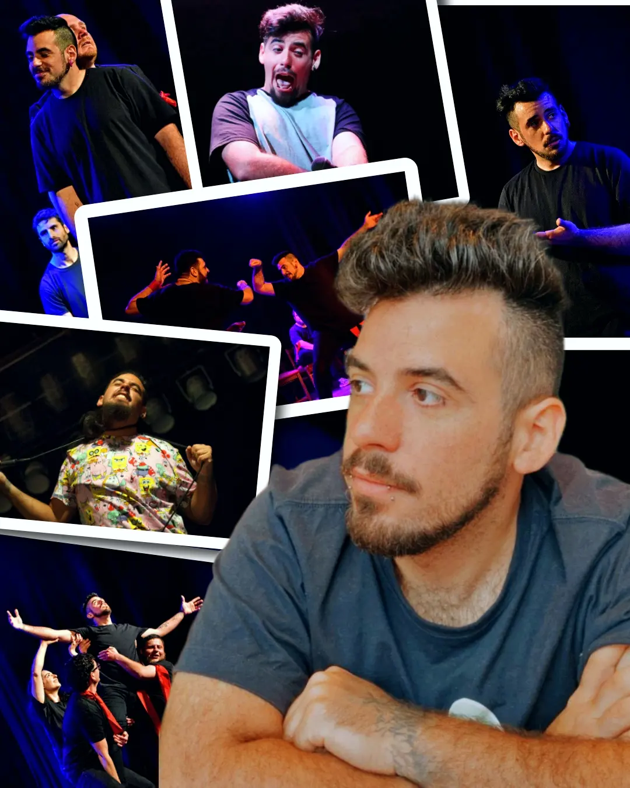

CHALANDRES
Música creada en tiempo real. Loop station, guitarras y sintetizadores.
Ver Sesiones
Música creada en tiempo real. Loop station, guitarras y sintetizadores.
Ver SesionesCreación musical en tiempo real
Todo el sonido pasa por la loopera. Capas de guitarra, bajos, sintetizadores y voces creadas de cero frente al público. La magia del error y la improvisación hace que ningún show suene igual al anterior.

Música, improvisación y escenario

Andrés no es solo un músico; es un performer. Cuenta con una trayectoria sólida en la improvisación actoral y el stand-up, haciendo del escenario su zona de confort.
Ese mismo ingenio creativo y desparpajo que usa para conectar con el público y hacer reír, hoy lo vuelca de lleno en su faceta musical, fusionando la actitud de comediante con la destreza de la loopera en vivo.
Seguí el proceso y las fechas